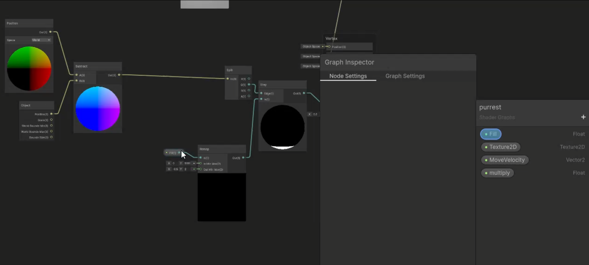
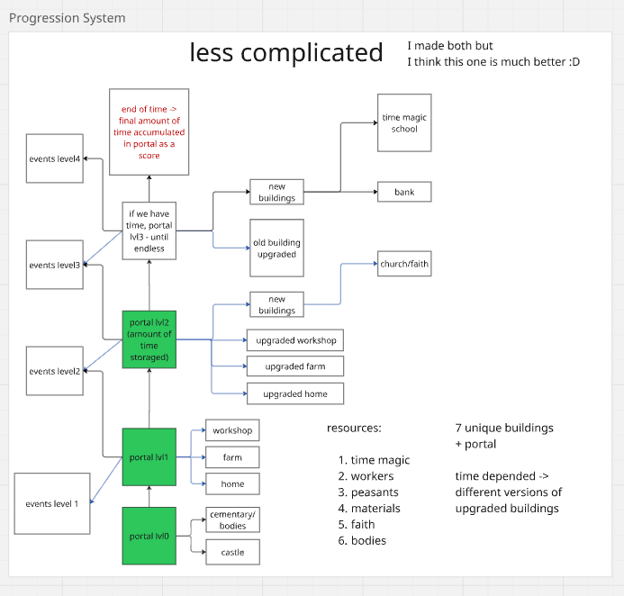
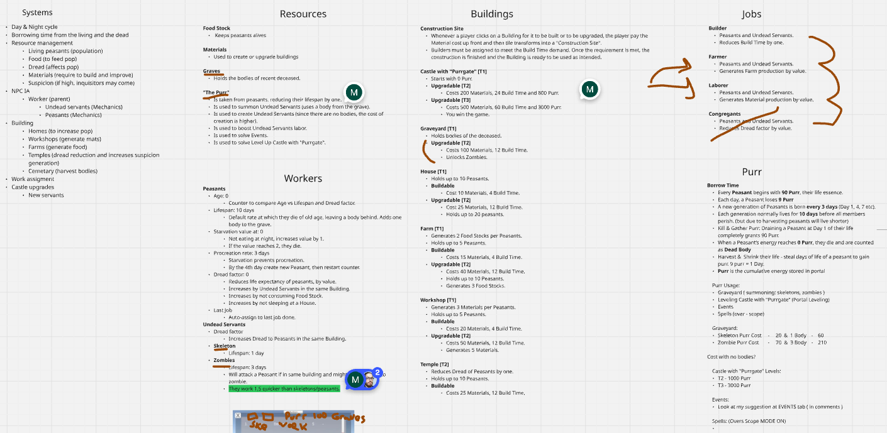
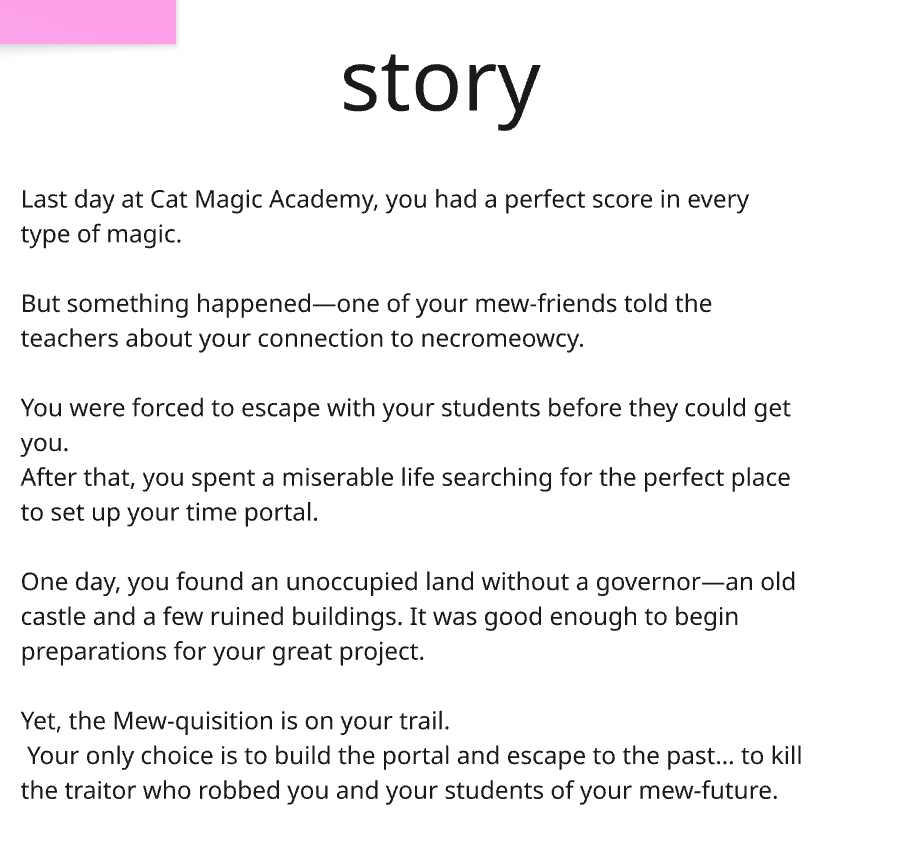
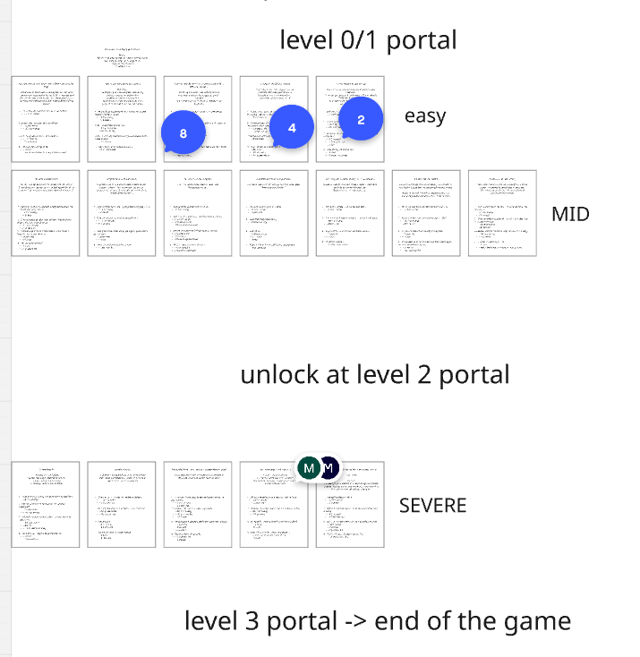
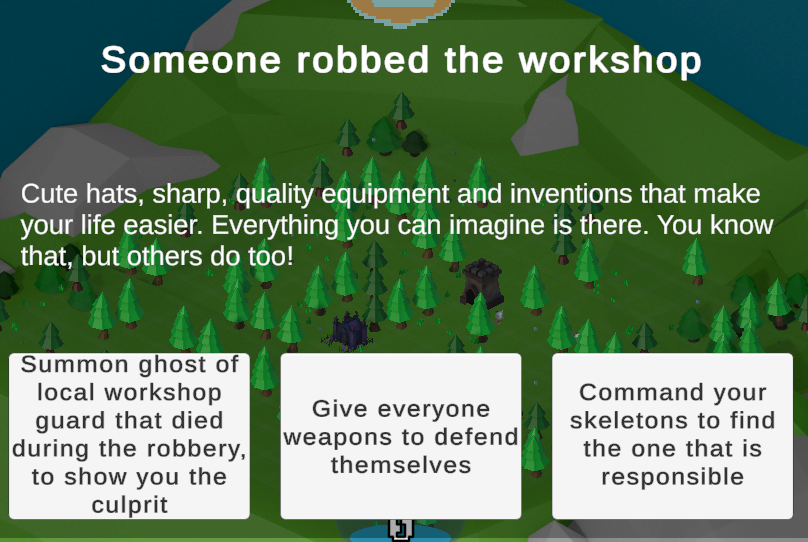

Necromeowcy
Necromancer simulator with town management | 1-week game jam
Overview & Roles
Necromeowcy is a dark-whimsical necromancer town management game built under high pressure during a 1-week competitive game jam. Players must keep their town alive, satisfy feline souls, and achieve their goal of escaping the Cattish Mew-quisition!
VFX Art & PURR Energy Shader Breakdown
I authored all particle effects and custom shaders across the game, closely collaborating with the programming team to trigger effects in direct sync with game states. The most intricate system was 'PURR' Energy—the core magical currency of the game.
I integrated gameplay parameters directly into the shader graphs: material visibility and alpha fade scale dynamically with current resource levels, while animated twirl vectors and Perlin noise distortion provide a fluid, alive sensation during energy expenditure.

Systems Design & Survival Economy (System 01 & 02)
Formulating clean, unambiguous systemic specifications for our engineers under a 1-week deadline was a prime challenge. I designed and balanced a multi-tiered economic engine that required careful player multitasking: managing dwindling food supplies, purr energy extraction, shelter construction, and workshop upgrades to survive escalating daily events.


Narrative Design & 17 Strategic Quests (Narrative 01 – 03)
To align a team of 9 developers immediately on day one, I finalized the overarching narrative framework within the opening hours. I authored the backstory of why the necromancer resurrects souls, why a strict time limit exists, and how different endings reflect moral decisions.
I authored 17 distinct narrative quests. Every five in-game days, a crisis or encounter triggers in the city, demanding player intervention. Every choice carries tangible economic and systemic consequences, altering citizen loyalty and resource reserves.


